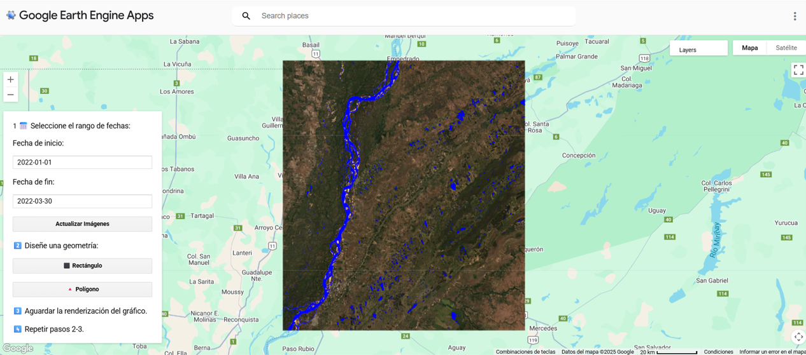
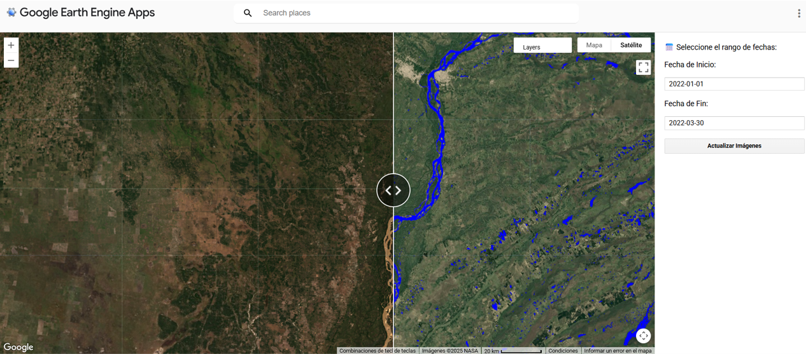

El recurso hídrico es necesario para responder a diferentes demandas sociales; desde el agua potable para el consumo humano, hasta su empleo en la industria y la generación de energía. Por otro lado, su limitación y distribución espacial presenta un desafío en lo que respecta a la gestión de este recurso.
En los últimos años, la conciencia de desarrollar prácticas sostenibles para la conservación y el uso eficiente de dicho recurso ha crecido a nivel mundial, al tiempo que se observa un aumento de la demanda y cambios en la distribución del recurso en las regiones áridas y húmedas. En este sentido, el conocimiento de la ubicación del agua superficial es importante para la gestión del recurso hídrico. Por otra parte, también son destacables los eventos hidrometeorológicos extremos relacionados a inundaciones que parecen mostrar un aumento en su frecuencia en distintos lugares del mundo. La identificación de áreas afectadas por inundaciones tras eventos climáticos extremos es fundamental para la gestión de desastres.
Argentina no se encuentra exenta de estos procesos, el país se caracteriza por alternar periodos secos y húmedos que se reflejan, por ejemplo, en el uso del suelo, y por presentar problemas de excesos hídricos, por sólo mencionar dos de ellos (Bontempi, 2023).
La Metodología empleada para el desarrollo de este proyecto implica:

Figura 1: Aplicación web en donde se setea el periodo de fecha y el área de interés, y como resultado se obtiene una máscara de agua superficial para el periodo seleccionado.Se desarrollaron dos aplicaciones web. El procesamiento de las imágenes, como se explicó previamente, consiste en el cálculo del índice multiespectral AWEI (Automated Water Extraction Index) para la determinación de cuerpos de agua a partir de la cual, mediante la técnica de umbralización, se genera una máscara de agua superficial, la cual puede ser visualizadas en dos aplicaciones web.
Aplicación web/ Visualizador 1 para la Determinación de agua superficial
Este visualizador permite al usuario “setear” un periodo temporal y seleccionar un área de interés sobre el cual el código diseñado permite determinar la máscara de agua superficial (Figura 1).
Link a Aplicación de Determinación de agua superficial: https://ee-investigacionign.projects.earthengine.app/view/deteccion-agua-por-zonas--ign---id
Aplicación web/ Visualizador 2 para la Comparación de cobertura hídrica
Este visualizador emplea el recurso de pantalla doble, el cual permite realizar una comparación entre un mosaico de fechas seleccionadas y el estado actual del curso de agua (Figura 2).

Figura 2: Visualizador de pantalla doble. A la izquierda se puede observar un mosaico de imágenes de Sentinel 2 del año seleccionado; a la derecha se observa la máscara de agua generada a partir de las imágenes multiespectrales seleccionadas de la izquierda.Link a Aplicación de Comparación de cobertura hídrica: https://ee-investigacionign.projects.earthengine.app/view/comparacion-mascara-de-agua-e-imagen- satelital-arg-ign---id
Esta aplicación permite visualizar los resultados en un visor interactivo y comparar visualmente dos capas o imágenes, en este caso una máscara y una imagen, de manera simultánea. Ayuda a visualizar cambios en la región, como también realizar un seguimiento de la variabilidad estacional y la identificación de cambios en la disponibilidad de agua. Asimismo, permite identificar zonas inundadas y realizar un monitoreo de las mismas a través del tiempo.Las aplicaciones desarrolladas resultan en herramientas útiles para cualquier estudio relacionado con el agua y su dinámica a lo largo del tiempo, ya que permite comparar imágenes ópticas, en este caso las adquiridas por el satélite Sentinel 2, y una máscara de agua en un visor dividido; facilitando así, la interpretación de datos.
Entre otras utilidades, estas aplicaciones, pueden usarse para el monitoreo de cuerpos de agua, la gestión de recursos hídricos en lo que respecta la disponibilidad del recurso en regiones afectadas por sequías o cambios estacionales, así como la determinación de inundaciones e identificación de áreas afectadas tras eventos climáticos extremos; lo que contribuye a a toma de decisiones basadas en imágenes satelitales.
Finalmente, a través del desarrollo del proyecto y específicamente de la implementación de la metodología planteada, se pueden establecer nuevas líneas de trabajo a futuro.
Bontempi, M. Eugenia. 2023. Las sequías en Argentina y sus ciclos históricos. Revista Ojo del Cóndor. Ed N°12.
Feyisa, G. L., Meilby, H., Fensholt, R., & Proud, S. R. (2014). Automated Water Extraction Index: A new technique for surface water mapping using Landsat imagery. Remote sensing of environment, 140, 23-35.
Gorelick, N., Hancher, M., Dixon, M., Ilyushchenko, S., Thau, D., & Moore, R. (2017). Google Earth Engine: Planetary-scale geospatial analysis for everyone. Remote sensing of Environment, 202, 18-27.